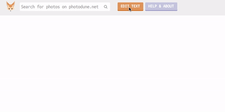
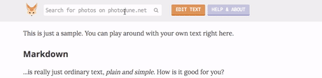

About
They say that a picture is worth a thousand words. It's definitely true. A picture can breathe life into your blog post or web page. Not only can it speak to your readers, but it can grab their attention and within seconds – tell them what you blog is about.
Desert Fox is a tool that can help you find beautiful photos for your blog post or web site and give you an instant preview of how they would look within your text.
If you have any issues, want to suggest how to improve this tool or just want to say Hi – drop an email to simon@boatsbay.com
The Editor
Click Edit Text and you are looking at fully functional Markdown editor. If you're not familiar with Markdown yet, you can read more about it here

You can paste text from your blog or write it from scratch here. After you’re done editing your text, click the save button and your writing will be saved to your browser's web storage and will not be lost after you close the browser.
The Search
Just type what you would like to find into the search box above and press enter. Your search results will be presented to you as a list of photos.

After each paragraph of your text, little dashed outlines will appear. That's where you will be able to drop your photos. But more about it in the next step.
The Layout
You can drag & drop with a mouse any photo from the search results to dashed outlines between paragraphs.

After the photo is dropped you can move it around within it's own placeholder, resize or remove it if you don't like it anymore. You can also do the same with any photos you had added any time before.
When you are happy with the result and you would like to use these photos for your actual blog post, go one by one through all of them, clicking the icon on the left upper corner of the photo to navigate directly to photodune.net where the purchase can be made.